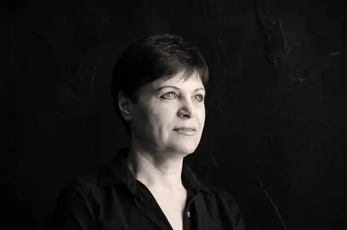
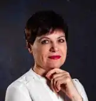
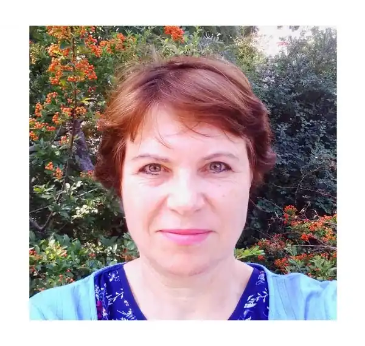

Світлана Шакула народилася 5 жовтня 1966 році в м. Первомайськ Луганській області в сім'ї робітників, батько був родом з Київщини, мати – з Полтавщини.
Шкільну і середню професійну освіту (вчитель молодших класів) здобула в м. Переяслав Київської області, вищу освіту (історичний факультет педагогічного університету) здобула в Києві.
З 1993 по 2006 рік працювала в Національному музеї історії України, з 2006 по 2022 рік працювала в Національному заповіднику "Софія Київська". В 2022-2023 роках працювала в музеї декоративно-прикладного мистецтва в Празі, а з весни 2023 року почала перекладати вірші чеського поета Володимира Голаня на українську мову. Десять таких перекладів Голаня було опубліковано на сайті "Український портал поезії". Під час роботи Світлани Шакули в усіх трьох музеях її статті про музейні предмети та мистецтво різних видів були опубліковані як в наукових збірниках, так і на мистецько-літературних сайтах та в соціальних мережах. Світлана Шакула є автором книги та численних статей про життя та творчість кіноактора Владислава Дворжецького (1939-1978).